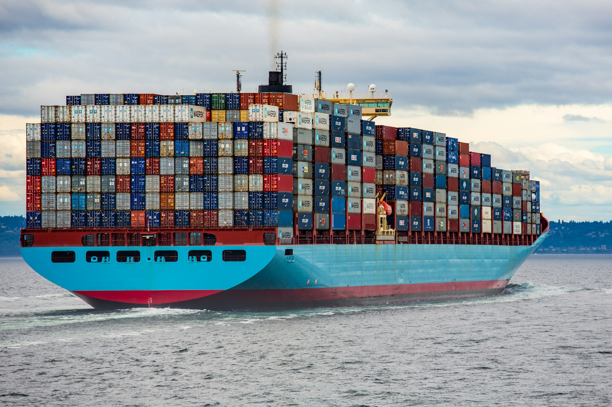

Gestionamos toda tu logística internacional para que tú puedas centrarte en hacer crecer tu negocio.
Desde el análisis inicial hasta la coordinación diaria, conectamos transporte, almacenes, proveedores y procesos para conseguir una operación más eficiente y controlada.
Detectamos dónde pierdes tiempo, dinero o control dentro de tu cadena logística.
Mejoramos rutas, proveedores, transporte, packaging, inventario e Incoterms.
Gestionamos transportistas, almacenes y operaciones para que todo funcione de forma coordinada.
Medimos costes, tiempos y KPIs para detectar oportunidades de mejora continuamente.
Rutas, operadores y coordinación de envíos.
Selección y coordinación de almacenes y operaciones.
Optimización de embalaje, volumen y costes.
Decisiones y procesos para mover mercancía correctamente.
Buscamos, coordinamos y supervisamos los partners necesarios.
Controlamos el rendimiento y buscamos nuevas mejoras.
No necesitas gestionar cada transportista, almacén o incidencia por separado. Nosotros coordinamos la operación y te mantenemos informado.

Cuéntanos cómo gestionas actualmente tu operación y vemos dónde podemos ayudarte.
Hablemos →